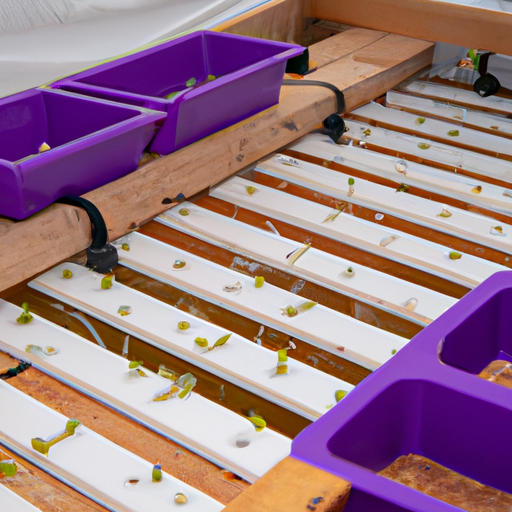

5 DIY Aquaponic Project You Can Build On A budget
For those looking to get into aquaponics, there are plenty of DIY projects out there that you can build on a budget. Aquaponics is a great way to grow your own food in an efficient and sustainable way. Here are five DIY aquaponic projects you can build on a budget.
1. The Mini-System: This is a great starter project that is simple and easy to build. It uses a five-gallon bucket and a few other pieces of equipment to create a mini aquaponic system. This is a great way to get started with aquaponics and learn the basics.
2. The DIY Aquaponic System: This is a more advanced project that requires more components and materials. It includes a larger tank, pump, and other equipment to create a larger, more complex aquaponic system.
3. The Small-Scale System: This is a great project for those who are looking to build a larger system. It includes a larger tank, a variety of different pumps, and other components. This project will require more space and a larger budget.
4. The Aquaponic Greenhouse: This is a great project for those looking to build a larger system and also provide a greenhouse to grow plants in. This project requires a larger tank, a variety of pumps, and other components to create a larger, more complex system.
5. The Vertical System: This is a great project for those looking to build a larger system and also take advantage of vertical space. This project requires a larger tank, a variety of pumps, and other components to create a larger, more complex system.
No matter what level of aquaponic system you want to build, there are plenty of DIY projects out there that you can build on a budget. Have fun and get creative with your own aquaponic projects!